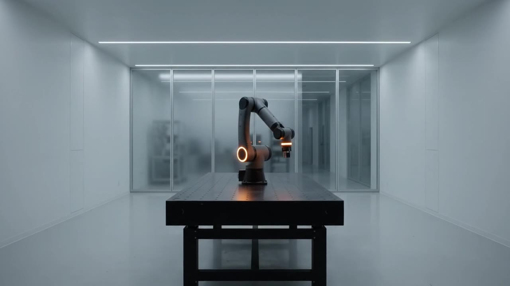
S01 · Power-up0:00 to 0:05
Light the rings.
The arm waits at the end of a long white lab as its amber joint rings ignite. The ORIVEX logo builds over the room.
ARC-7
A 45-second product film for a seven-axis fabrication arm that does not exist. Brand, specifications, script, narration, score, graphics and edit, directed end to end. No cameras. No studio. No robot.
Spec product film. ORIVEX and ARC-7 are fictional.
01 · The product
A believable product film starts with a believable product. Before a single image existed, ARC-7 had a datasheet: seven axes, twelve tool heads, a tool change in four tenths of a second and repeatability to two microns.
Every number in the film comes from that sheet. The narration quotes it, the on-screen graphics display it, and the shots were planned to show each claim happening. One source of truth, so the script, the picture and the graphics never disagree.
The brief was the opposite of a soda ad: precise, technical, sterile and premium. The kind of launch film an industrial robotics company would put on its homepage.
An open orbit arc with an amber dot for the mark. A wide-tracked condensed wordmark. Monospaced type for every number, so data always looks like data. Two neutrals and one signal colour.
02 · The consistency system
A product film fails the moment the product changes shape between shots. Generative video drifts, so the system was built to remove every chance for drift before any motion was generated.
Four master references. The arm, a close-up of the wrist and tool flange, the empty lab, and the finished part. One canonical description of the arm, pasted word for word into every prompt and never paraphrased. One approved keyframe per shot, made with the references attached, signed off as a still before it was animated.
No text from the model. AI video garbles letters and numbers, so every prompt ended with “no text, no logos, no watermarks”. All typography was added afterwards as vector graphics.
Canonical subject block · used verbatim in every prompt
the ORIVEX ARC-7, a seven-axis industrial precision robotic arm with a slender, architectural silhouette: matte ceramic-white composite shell panels, satin graphite joint housings, a brushed titanium wrist ending in a hexagonal quick-change tool flange, a thin glowing amber light ring around every joint, mounted on a low round graphite pedestal base. Precise machined panel seams and small hex fasteners, no visible cables.
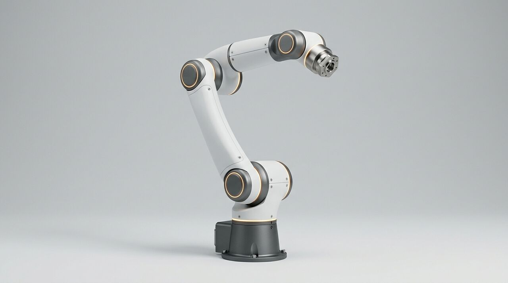
The whole arm. Shape, joints and colours locked.
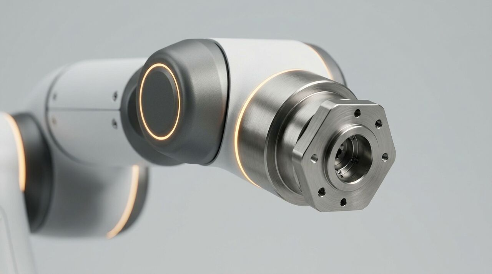
The detail every close-up has to match.
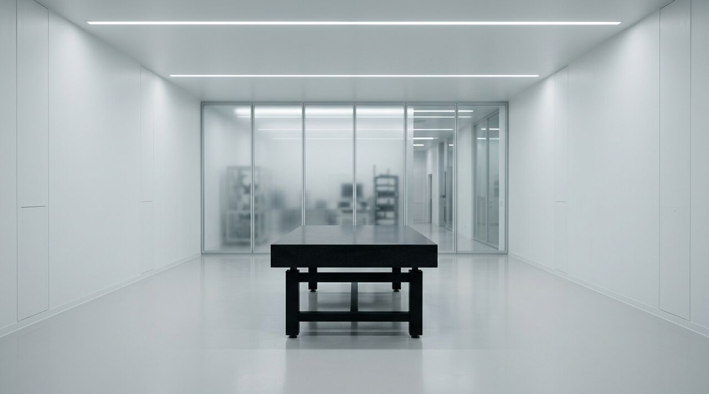
The empty environment, lit once, reused everywhere.
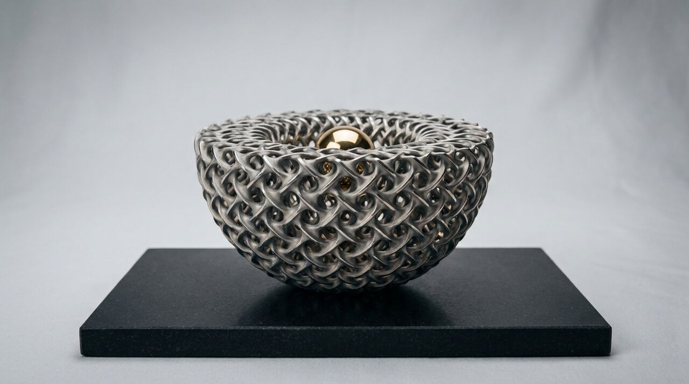
The object the arm makes, consistent from etch to end.
03 · The eight shots
Eight shots, one technical beat each: power-up, reveal, five feature demonstrations and an end card. Every shot proves one line of the datasheet.

S01 · Power-up0:00 to 0:05
The arm waits at the end of a long white lab as its amber joint rings ignite. The ORIVEX logo builds over the room.
S02 · Reveal0:05 to 0:10
The arm stands in its hero pose while the camera dollies around it. The ARC-7 title lands and a corner bug starts.
FixThe first prompt asked for a full-body unfold and a camera orbit at once, and the arm changed shape. The arm was held static and the camera did the moving.
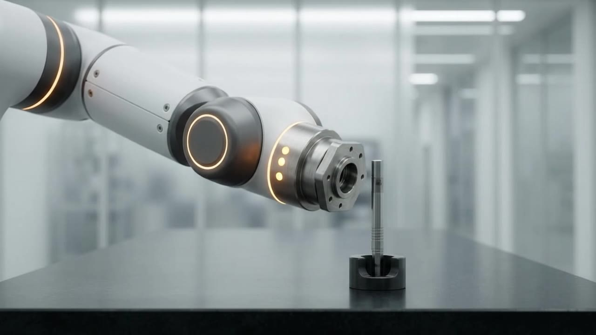
S03 · Tool change0:10 to 0:16
The wrist lowers onto a tool. A 0.4-second callout tracks the flange with a leader line.
FixTwo objects joining is where models morph. One tool only, a start frame and an end frame, and a slow move sped up in the edit.
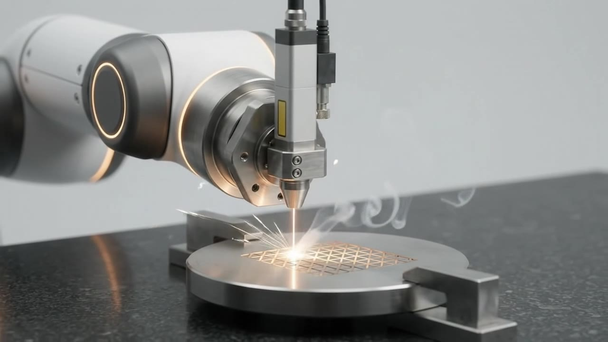
S04 · Laser etch0:16 to 0:23
A laser etches titanium. A ±2 µm repeatability readout and live X, Y and Z coordinates count on screen.
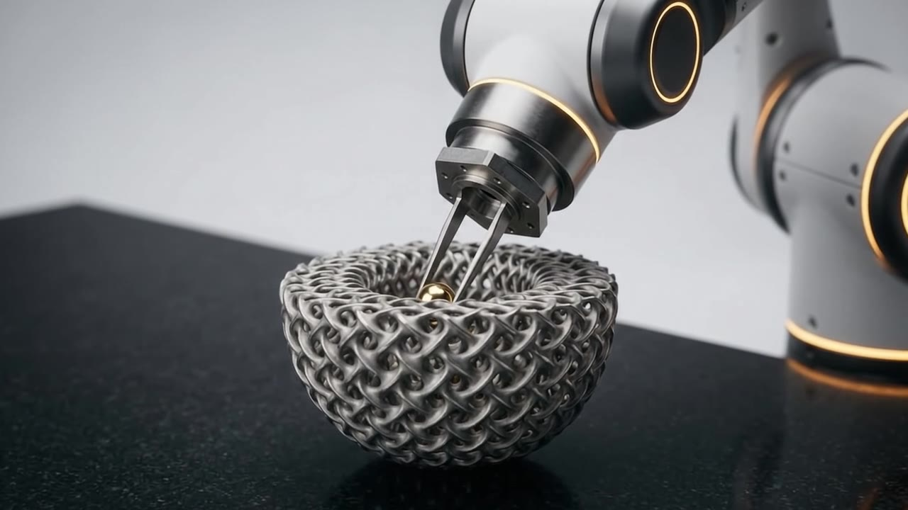
S05 · Placement0:23 to 0:28
The gripper sets a gold sphere into the lattice. A 7-axes callout and a target bracket frame the move.
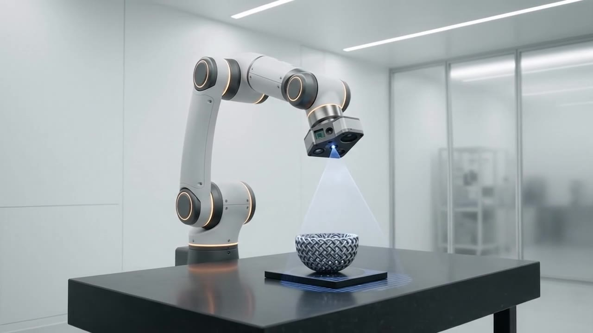
S06 · Inspection0:28 to 0:33
A blue scan sweeps the part. A scan box, a 1.2 M points per second readout and a result table end on PASS.
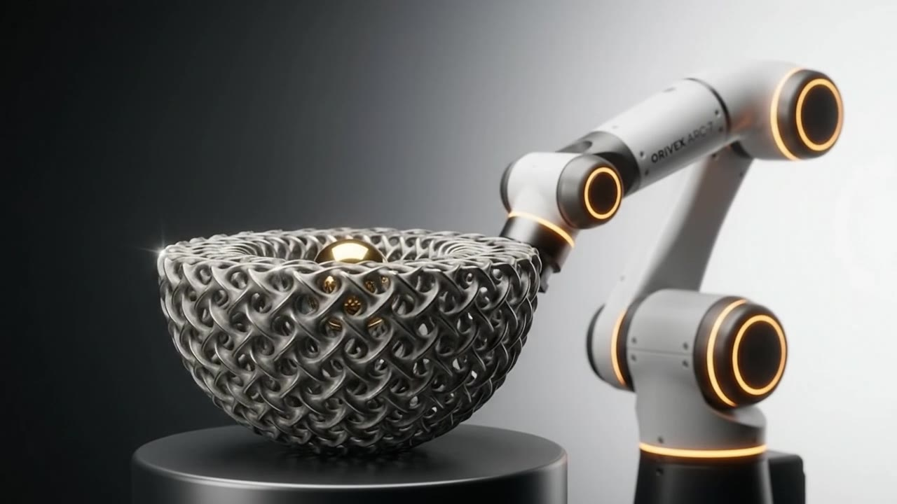
S07 · Finished part0:33 to 0:39
The finished piece, lit like jewellery, with the arm resting beside it. One line on screen: design to finished part, in a single cell.
CheckThe model printed brand text on the arm despite the prompt. It was checked on review and kept only because it came out clean and legible.
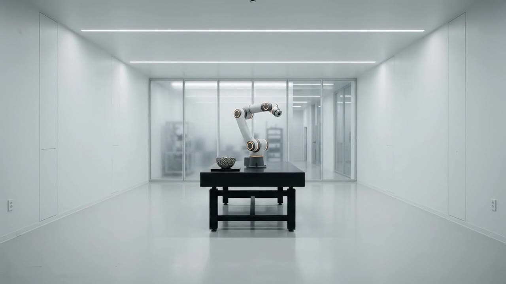
S08 · Outro0:39 to 0:45
Back to the wide lab, now with the part on the bench. The end card settles under a white veil and fades to black.
04 · The edit
The narration was recorded as eight separate files, one per line, so each could sit exactly on its shot. Every 8-second generated clip was trimmed to its strongest stretch with a frame-accurate in point. Hard cuts only.
Seconds. Hover or tab through any block for its timing. Narration start times from the edit; lengths measured from the recorded files.
| Shot | Timeline | Source in | On-screen graphics |
|---|---|---|---|
| S01 Power-up | 0.0 to 5.0 | 3.0 s | ORIVEX logo intro |
| S02 Reveal | 5.0 to 10.3 | 1.2 s | ARC-7 title, corner bug starts |
| S03 Tool change | 10.3 to 16.0 | 1.0 s | 0.4 s callout with leader line |
| S04 Laser etch | 16.0 to 22.8 | 0.1 s | ±2 µm, live X/Y/Z readout |
| S05 Placement | 22.8 to 27.5 | 0.6 s | 7 axes callout, target bracket |
| S06 Inspection | 27.5 to 33.4 | 0.6 s | Scan box, 1.2 M pts/s, PASS table |
| S07 Finished part | 33.4 to 39.2 | 0.6 s | “Design to finished part.” |
| S08 Outro | 39.2 to 45.0 | 0.5 s | End card with veil, fade to black |
05 · The script
About 80 words for 45 seconds. Short declarative lines, each carrying one claim from the datasheet, each written to land on the shot that proves it.
| Line | Starts | Narration |
|---|---|---|
| VO 01 | 0:00.6 | In fabrication, there has always been a trade-off. |
| VO 02 | 0:05.3 | Speed, or precision. Meet ARC-7, by Orivex. |
| VO 03 | 0:10.6 | Twelve tool heads. A full tool change in four tenths of a second. |
| VO 04 | 0:16.2 | It etches titanium to within two microns. Every pass. Every part. |
| VO 05 | 0:23.0 | The placement line, rewritten and re-recorded after review. See below. |
| VO 06 | 0:27.75 | And it inspects its own work as it goes, at over a million points per second. |
| VO 07 | 0:33.75 | From digital design to finished part, in a single cell. |
| VO 08 | 0:39.9 | Orivex ARC-7. Precision, without compromise. |
Review note · VO 05
…components smaller than a grain of sand…
The first draft promised components smaller than a grain of sand. The shot shows a gold sphere the size of a marble. The line was rewritten around the seven axes and re-recorded. Every claim gets checked against what is visible on screen.
06 · The mix
One music bed, structured to follow the edit: a quiet open, a build through the features, a swell before the sign-off and a resolve under the end card. Its level is automated around the narration so every word stays clear.
Volume as a fraction of full level, over seconds. Levels from the mix notes; ramp timing reconstructed from the narration placement.
| Moment | Music level |
|---|---|
| Open, before the first line | 0.60 |
| Under narration | 0.27 |
| Under the quiet end of line 4 | 0.17 |
| Swell between lines 7 and 8 | 0.60 |
| Under the end card | 0.38 |
Every animation prompt asked the model for diegetic sound only: servos, the tool clunk, the laser. No music, no voices. That ambient track sits under the mix at 0.7 to 0.8, and drops to 0.35 on the laser shot, where its high-frequency hiss was masking speech.
“Every pass. Every part.” came out of the voice tool noticeably quieter than the rest of line four. The tail was lifted, compressed and limited on its own, then the music dipped further underneath it. The final mix sits at about −16 LUFS.
07 · The graphics
Every logo, callout and readout was drawn as a vector overlay in HyperFrames, an open-source tool that builds video from HTML. Counters tween a value and write it to the screen frame by frame, so the X, Y and Z coordinates genuinely count. Before placing anything, each shot was sampled with a grid to find the clean areas, so no graphic ever sits on the product.
One bug worth knowing about: setting text to uppercase turns the micro sign (µ) into a capital M. Every unit was wrapped so µm stays µm.
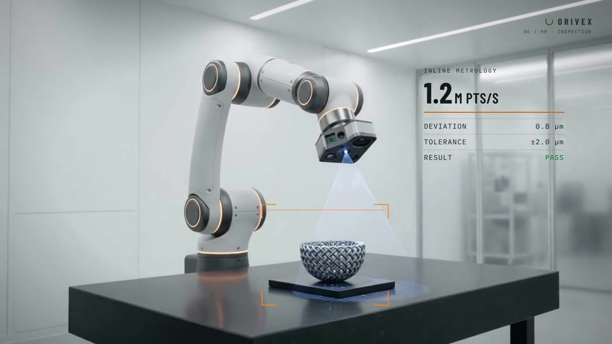
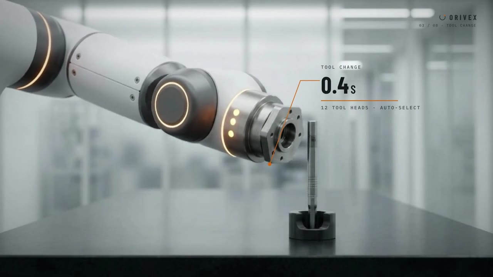
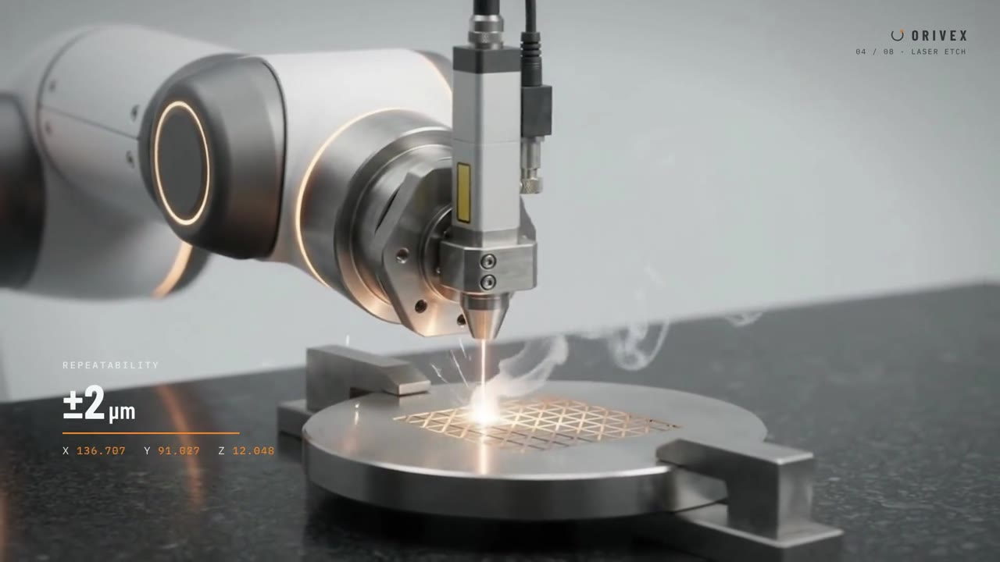
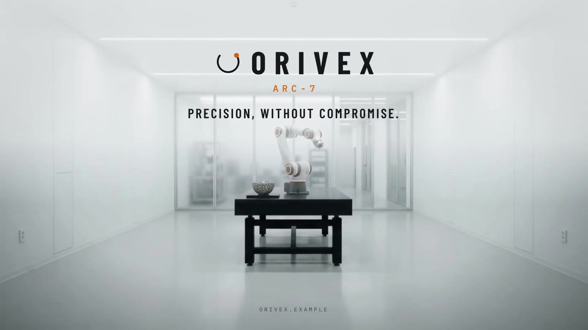
Fictional values from the film’s S06 result table: deviation 0.8 µm against a tolerance of ±2.0 µm.
08 · The pipeline
| Stage | Tool |
|---|---|
| Concept, script, shot plan, prompts, assembly | Claude (Anthropic) |
| References and keyframes | Google Flow |
| Motion | Gemini Omni 1.1 Flash |
| Narration | Speechify |
| Score | Suno |
| Graphics, mix, render | HyperFrames (open source) |
Concept to finished film in a single working session. No cameras, no studio and no traditional editing timeline. The film exists as code, so any change, from a new line of narration to a moved callout, is a re-render rather than a rebuild. A full 45-second render at 1080p takes about four and a half minutes.
Three versions reached the final cut. Each round followed the same loop: watch, note, fix, re-render, keep every version.
The tools generated the material. Every decision about what stayed, what moved and what got cut was made by a director.
Spec product film. ORIVEX and ARC-7 are fictional. The brand, product and specifications were created for this production demonstration.
Director
Creative Director · North Vancouver, BC
I directed ORIVEX ARC-7 from brief to final render: the product, every shot, every line of narration and every graphic. Technical work is still storytelling. It just needs every claim to be true on screen.
I have spent 15+ years across video, content, brand, technology and business. In 2006 I founded DJC Media, an independent studio where I direct every discipline in-house, with a quarter billion views directed.
AI is my production crew. The idea, the standards and the final cut stay with me.